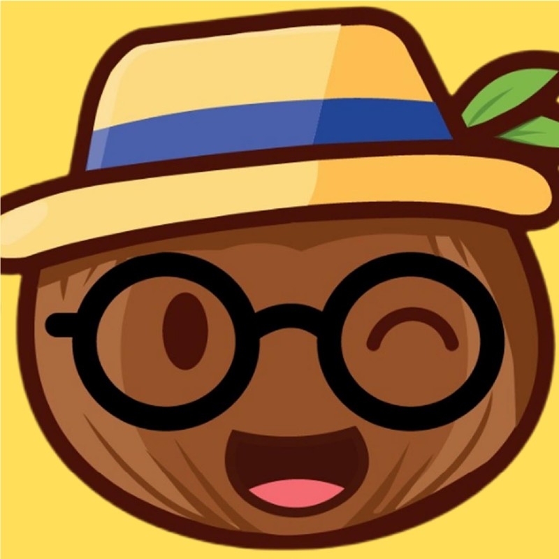

📚
Contenido histórico
Descubre historias, personajes, tradiciones y conocimientos que forman parte de nuestra identidad.
Aprende las lenguas y culturas de Nicaragua mediante microaprendizaje, historias, héroes, leyendas y experiencias gamificadas.

NicaLingo combina educación, cultura y tecnología en un solo espacio.
Descubre historias, personajes, tradiciones y conocimientos que forman parte de nuestra identidad.
Aprende junto a otras personas y comparte el conocimiento cultural de Nicaragua.
Conoce lugares, comunidades y expresiones culturales desde una nueva perspectiva.
Pequeñas actividades que convierten el aprendizaje en una experiencia dinámica.
Escucha y reconoce palabras, expresiones y sonidos.
Practica expresiones y desarrolla tu comunicación.
Comprende las estructuras mientras avanzas por niveles.
Escribe, completa retos y demuestra lo aprendido.
Herramientas para crear actividades, organizar recursos y apoyar el proceso educativo.
Crea actividades y evaluaciones adaptadas a diferentes niveles.
Organiza materiales educativos para facilitar la enseñanza.
Cada elemento de NicaLingo representa una parte de nuestra visión.
Representa el respeto por la sabiduría ancestral y nuestras raíces.
Une identidad nacional, cultura y aprendizaje moderno.
Nuestro personaje representa cultura, estudio y conexión con la tierra.
Aprende, descubre y conecta con nuestra cultura.
Comenzar ahora →